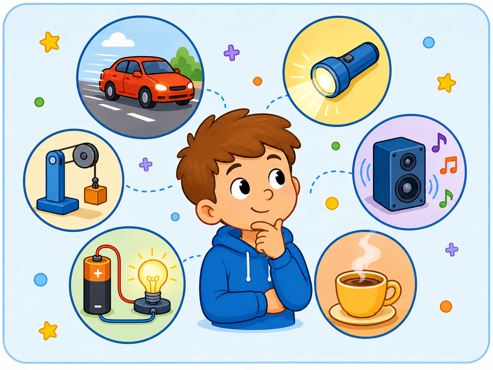
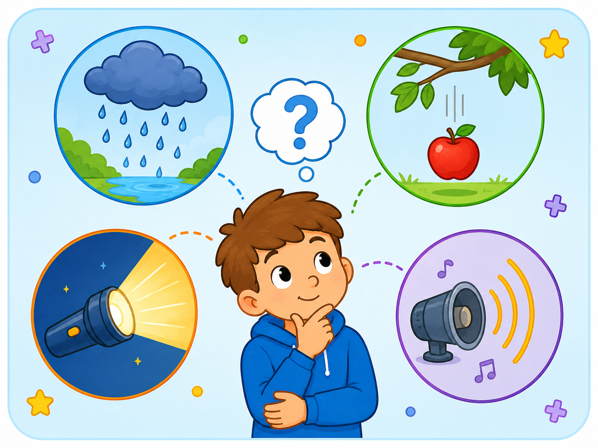
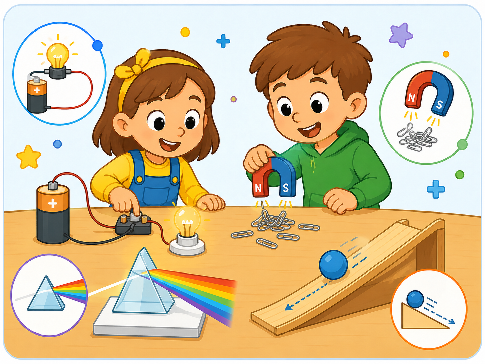
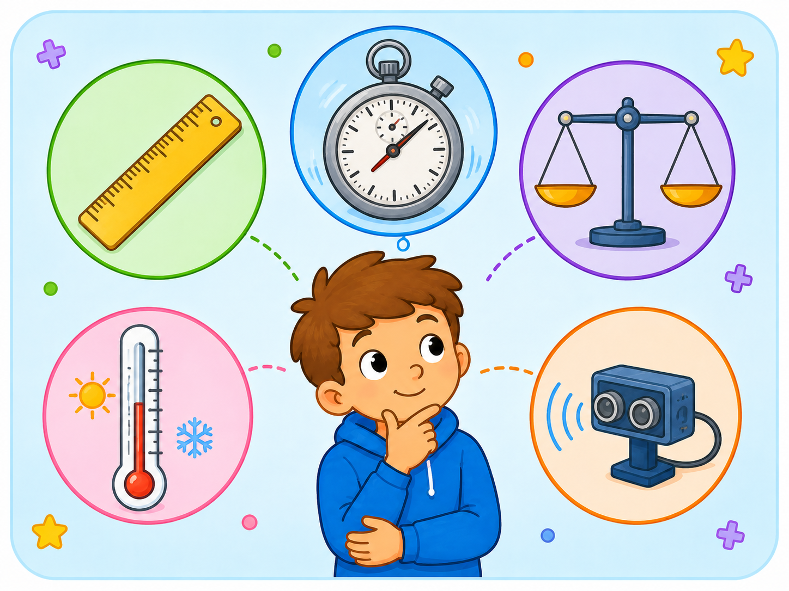
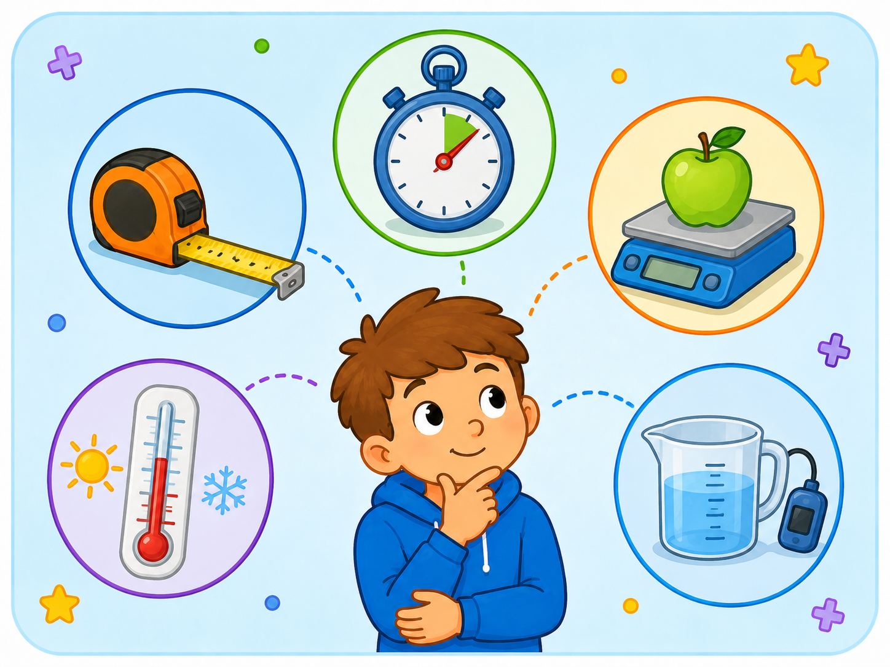
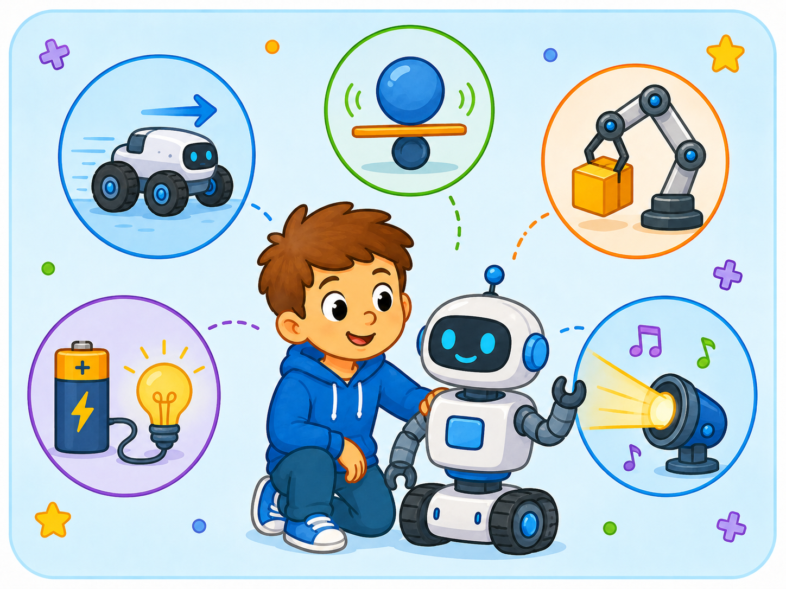
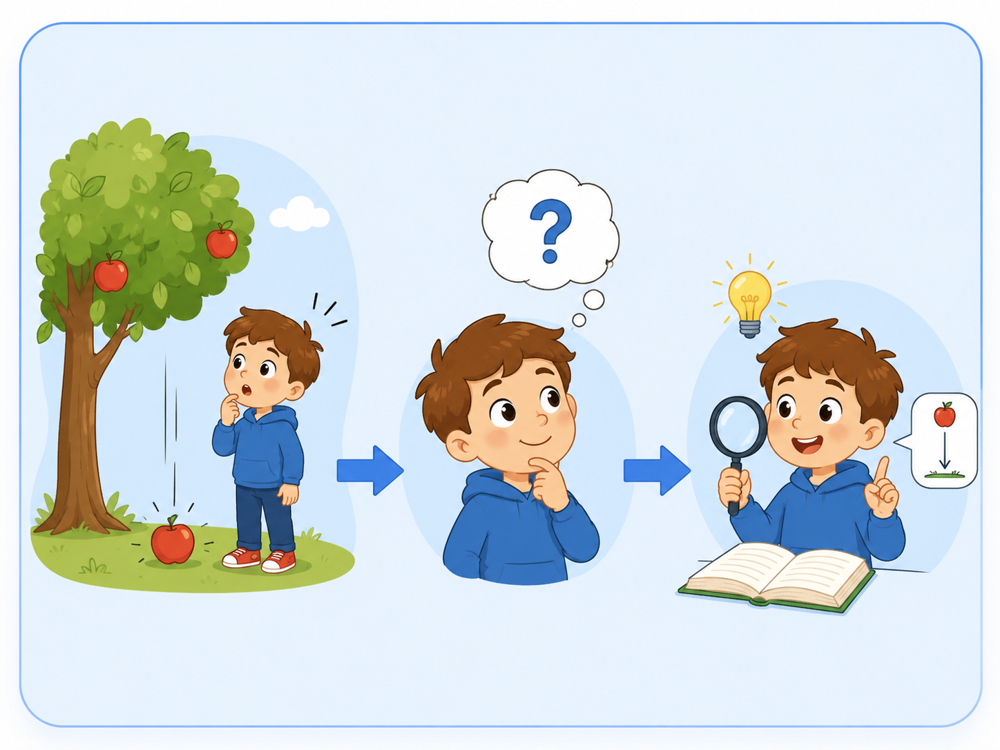
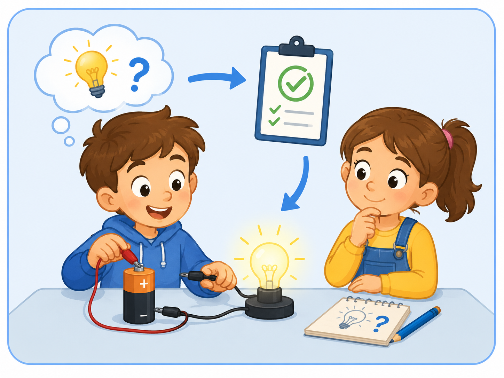
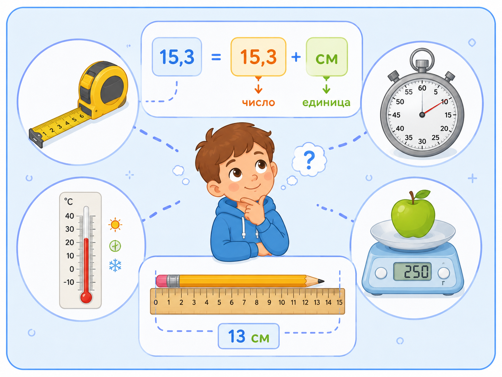
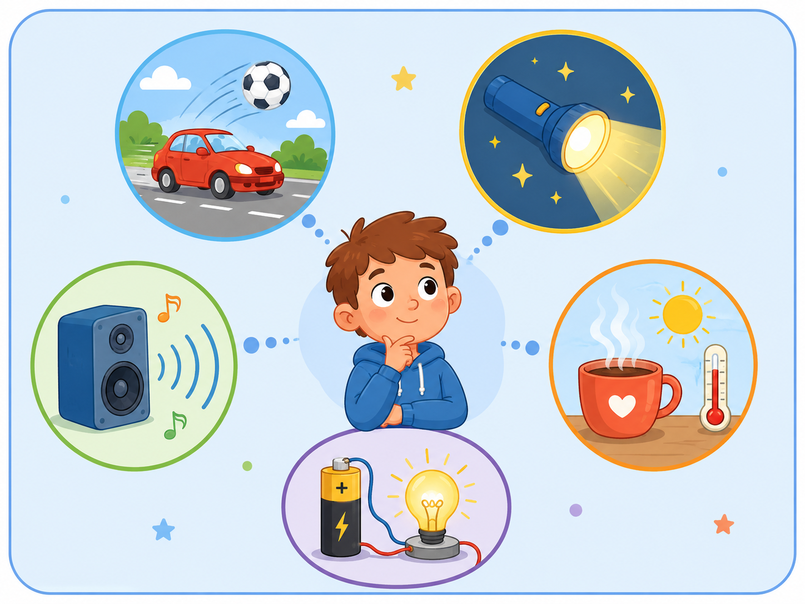

Первоначальное знакомство с наукой «Физика»
Теоретический блок
Что изучает физика
Физика — это наука о природе, которая изучает тела, вещества, явления и законы, по которым происходят изменения в окружающем мире.
Каждый день человек сталкивается с физическими явлениями: предметы падают на землю, вода нагревается и охлаждается, свет освещает комнату, звук распространяется в воздухе, техника работает от электричества.
Физика помогает объяснять, почему происходят эти явления, как они связаны между собой и как человек может использовать знания о природе в жизни, технике, медицине, строительстве, транспорте и робототехнике.
При изучении физики важно не только запоминать определения, но и учиться наблюдать, сравнивать, измерять, делать выводы и проверять свои предположения с помощью опыта.

Физика вокруг нас
Физические явления можно увидеть в движении, свете, звуке, тепле, электричестве и работе различных устройств.

Природные явления
Физика объясняет, почему идёт дождь, почему тела падают, как распространяется свет и почему возникает звук.

Опыты и эксперименты
С помощью опытов можно проверить предположения и увидеть, как физические законы работают на практике.
Основные понятия физики
При первом знакомстве с физикой важно понять несколько базовых понятий: физическое тело, вещество, физическое явление, наблюдение, опыт и измерение.
Любой предмет
Физическим телом называют любой предмет, который имеет форму и занимает место в пространстве. Например: мяч, книга, робот, стол, камень.
Из чего состоит тело
Вещество — это материал, из которого состоит физическое тело. Например: железо, пластик, дерево, вода, стекло.
Что происходит
Физическое явление — это изменение, происходящее с телами или веществами: движение, нагревание, охлаждение, свечение, звучание.
Изучение без вмешательства
Наблюдение — это изучение явления без изменения условий. Например, можно наблюдать, как движется маятник.
Проверка на практике
Опыт или эксперимент проводится специально, чтобы проверить предположение или изучить явление в заданных условиях.
Получение числа
Измерение позволяет получить числовое значение величины: длины, времени, массы, температуры, скорости и других параметров.
Физические явления
Физические явления можно разделить на несколько групп. Такое деление помогает лучше понимать, какие процессы происходят в природе и технике.
Примеры физических явлений
| Вид явления | Что происходит | Пример |
|---|---|---|
| Механическое | Тело движется или изменяет положение | Робот едет вперёд, мяч катится по полу |
| Тепловое | Тело нагревается или охлаждается | Вода закипает, лёд тает |
| Световое | Связано со светом и изображением | Лампа освещает комнату, луч отражается от зеркала |
| Звуковое | Возникает и распространяется звук | Динамик EV3 подаёт сигнал |
| Электрическое | Связано с электрическим током и устройствами | Работает мотор, заряжается аккумулятор |
Как физика связана с робототехникой
Робототехника тесно связана с физикой. Чтобы робот двигался, нужно понимать, как работают моторы, колёса, сила трения, равновесие, скорость, расстояние и время. Датчики робота тоже работают на основе физических явлений.
Пример
Когда робот LEGO MINDSTORMS EV3 едет по поверхности, он выполняет механическое движение. Если робот останавливается перед препятствием, он использует данные датчика расстояния. Если робот подаёт сигнал, возникает звуковое явление.

Измерения
В физике важно измерять расстояние, время, массу, температуру и другие величины, чтобы делать точные выводы.

Приборы
Для измерений используются линейка, секундомер, весы, термометр, датчики и другие устройства.

Робототехника
Роботы используют физические законы: движение, равновесие, силу, энергию, звук, свет и электричество.
Наблюдение, опыт и вывод
Изучение физики часто начинается с простого наблюдения. Сначала человек замечает явление, затем задаёт вопрос, выдвигает предположение и проверяет его с помощью опыта.
Как изучают физическое явление
Проверь себя: что это за явление?
Нажмите на ситуацию, чтобы увидеть пояснение.
Это механическое явление, потому что робот изменяет своё положение в пространстве.
Это световое явление, потому что оно связано с излучением и распространением света.
Это звуковое явление, потому что возникает и распространяется звук.
Практический блок
Практическая часть занятия направлена на первичное знакомство с физикой через наблюдения, простые измерения и примеры из робототехники.
Задание 1. Найдите физические явления вокруг себя
Цель: научиться замечать физические явления в повседневной жизни.
- Осмотрите учебный кабинет или рабочее место.
- Найдите пример механического явления.
- Найдите пример светового явления.
- Найдите пример звукового явления.
- Найдите пример теплового или электрического явления.
- Запишите найденные примеры в тетрадь.
Подсказка: движение руки, работа лампы, звук звонка, нагрев ноутбука и работа мотора — всё это можно рассматривать как физические явления.
Задание 2. Физическое тело и вещество
Цель: научиться различать физическое тело и вещество.
- Выберите 5 предметов на рабочем месте.
- Запишите их как физические тела.
- Определите, из какого вещества или материала они сделаны.
- Сравните предметы между собой.
- Сделайте вывод, чем тело отличается от вещества.
Подсказка: линейка — это физическое тело, а пластик или дерево — вещество, из которого она сделана.
Задание 3. Простое измерение
Цель: познакомиться с измерением физических величин.
- Возьмите линейку.
- Измерьте длину небольшого предмета.
- Запишите результат измерения с единицей измерения.
- Повторите измерение ещё раз.
- Сравните результаты.
- Обсудите, почему измерения должны быть аккуратными.
Подсказка: при записи измерения важно указать не только число, но и единицу измерения, например 12 см.
Задание 4. Наблюдение за движением
Цель: понять, что движение является физическим явлением.
- Выберите небольшой предмет или модель робота.
- Понаблюдайте, как он перемещается по поверхности.
- Определите начальное и конечное положение.
- Опишите, что изменилось во время движения.
- Сделайте вывод, почему это явление относится к механическим.
Подсказка: если тело изменило своё положение, значит произошло механическое движение.
Задание 5. Физика и робот
Цель: определить, какие физические явления можно увидеть в работе робота.
- Рассмотрите модель робота LEGO MINDSTORMS EV3.
- Определите, какие детали отвечают за движение.
- Определите, какие устройства получают информацию об окружающей среде.
- Назовите физические явления, которые можно наблюдать при работе робота.
- Запишите 3 примера связи физики и робототехники.
Подсказка: обратите внимание на движение колёс, работу моторов, звуковой сигнал, датчики и аккумулятор.
Наглядные примеры физических явлений
В этом разделе представлены иллюстрации и схемы, которые помогают увидеть физику в окружающем мире: в движении, свете, звуке, измерениях и работе технических устройств.

Наблюдение
Показывает, как человек начинает изучать явление: сначала замечает его, затем задаёт вопрос и ищет объяснение.

Физический опыт
Помогает объяснить, что опыт проводится специально для проверки предположения или изучения явления.

Измерение
Напоминает, что результат измерения записывается числом и единицей измерения.

Примеры явлений
Показывает разные виды физических явлений: движение, свет, звук, тепло и электричество.
Вопросы для самопроверки
1. Что изучает физика?
Физика изучает природу, физические тела, вещества, явления и законы, по которым происходят изменения в окружающем мире.
2. Что такое физическое тело?
Физическое тело — это любой предмет, который имеет форму и занимает место в пространстве.
3. Что такое вещество?
Вещество — это материал, из которого состоит физическое тело. Например, вода, железо, пластик, дерево.
4. Что такое физическое явление?
Физическое явление — это изменение, происходящее с телами или веществами: движение, нагревание, свечение, звучание.
5. Что такое наблюдение?
Наблюдение — это изучение явления без вмешательства в его ход.
6. Чем опыт отличается от наблюдения?
При наблюдении явление просто изучают, а опыт проводят специально, чтобы проверить предположение или создать нужные условия.
7. Почему измерения важны в физике?
Измерения позволяют получить точные числовые данные и сравнивать результаты опытов.
8. Какое явление происходит, когда робот движется?
Когда робот движется, происходит механическое явление, потому что тело изменяет своё положение в пространстве.
9. Какие физические явления можно увидеть в робототехнике?
В робототехнике можно увидеть механические, электрические, звуковые и световые явления.
10. Зачем изучать физику при работе с роботами?
Физика помогает понять, как робот движется, почему работают моторы, как датчики получают данные и как устройство взаимодействует с окружающей средой.